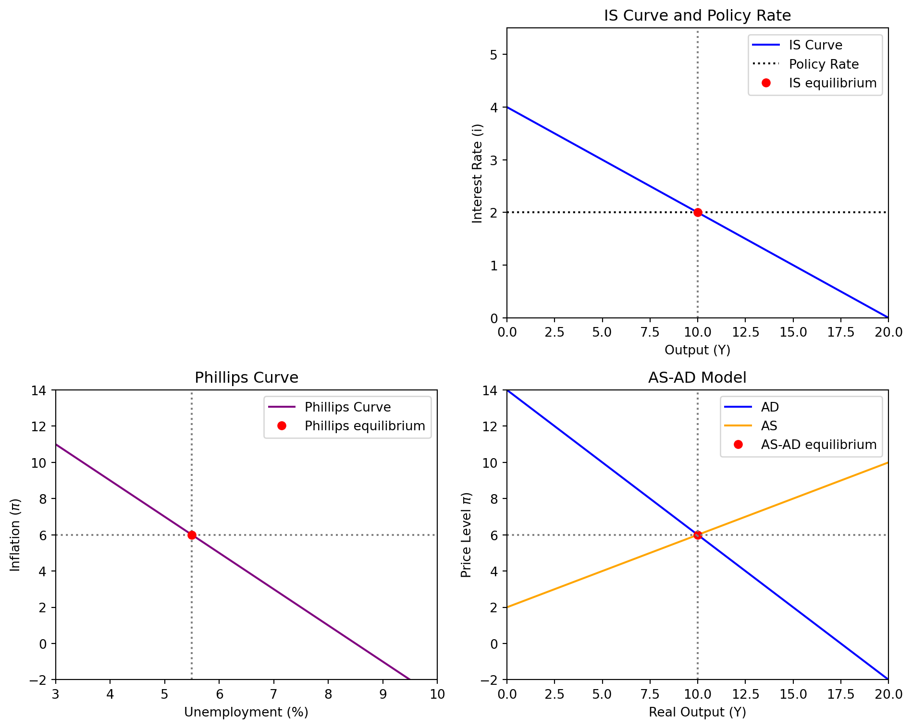

import numpy as np
import matplotlib.pyplot as plt
#Main parameters:
model = 0
if model == 0:
# CB signal driven economy
i_policy = 2.0
Inflation_expectations = 2 + 2*i_policy
else:
# CB transparent inflation targeting economy
Inflation_expectations = 5
i_policy = 1 + (Inflation_expectations-2)
# Common output range
Y = np.linspace(0, 20, 200)
# Phillips curve parameters
U = np.linspace(3, 10, 200)
U_eq = 5.5
slope = -2
P_phillips = Inflation_expectations + slope * (U - U_eq)
# AS-AD curve parameters
a_AD = 14
b_AD = 0.8
d_AS = 0.4
Y_star = (a_AD - Inflation_expectations) / b_AD
P_AD = a_AD - b_AD * Y
c_AS = Inflation_expectations - d_AS * Y_star
P_AS = c_AS + d_AS * Y
Y_eq = (a_AD - c_AS) / (b_AD + d_AS)
P_eq = a_AD - b_AD * Y_eq
# IS curve parameters
b_is = 0.2
a_is = a_is = i_policy + b_is * Y_star
i_IS = a_is - b_is * Y
# Create unified 2x2 subplot grid
fig, axs = plt.subplots(2, 2, figsize=(10, 8))
# Top left: (empty)
axs[0, 0].axis('off')
# Top right: IS curve
ax_is = axs[0, 1]
ax_is.plot(Y, i_IS, label='IS Curve', color='blue')
ax_is.axhline(y=i_policy, color='black', linestyle=':', label='Policy Rate')
ax_is.axvline(x=Y_star, linestyle=':', color='gray')
ax_is.plot(Y_star, i_policy, 'ro', label='IS equilibrium') # equilibrium point
ax_is.set_xlabel('Output (Y)')
ax_is.set_ylabel('Interest Rate (i)')
ax_is.set_title('IS Curve and Policy Rate')
ax_is.legend()
# Bottom left: Phillips curve
ax_phillips = axs[1, 0]
ax_phillips.plot(U, P_phillips, color='purple', label='Phillips Curve')
ax_phillips.axhline(y=P_eq, linestyle=':', color='gray')
ax_phillips.axvline(x=U_eq, linestyle=':', color='gray')
ax_phillips.plot(U_eq, P_eq, 'ro', label='Phillips equilibrium')
ax_phillips.set_xlabel('Unemployment (%)')
ax_phillips.set_ylabel(r'Inflation ($\pi$)')
ax_phillips.set_title('Phillips Curve')
ax_phillips.legend()
# Bottom right: AS-AD model
ax_asad = axs[1, 1]
ax_asad.plot(Y, P_AD, label="AD", color='blue')
ax_asad.plot(Y, P_AS, label="AS", color='orange')
ax_asad.plot(Y_eq, P_eq, 'ro', label='AS-AD equilibrium')
ax_asad.axhline(y=P_eq, linestyle=':', color='gray')
ax_asad.axvline(x=Y_star, linestyle=':', color='gray')
ax_asad.set_xlabel('Real Output (Y)')
ax_asad.set_ylabel(r'Price Level $\pi$)')
ax_asad.set_title('AS-AD Model')
ax_asad.legend()
# Setting axes
ax_is.set_ylim([0, 5.5])
ax_is.set_xlim([0, 20])
ax_asad.set_ylim([-2, 14])
ax_asad.set_xlim([0, 20])
ax_phillips.set_ylim([-2, 14])
ax_phillips.set_xlim([3, 10])
# Match y-limits for Phillips and AS-AD plots
ax_phillips.set_ylim(ax_asad.get_ylim())
plt.tight_layout()
plt.show()
